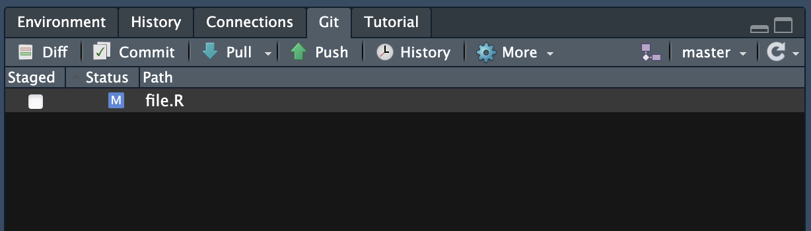
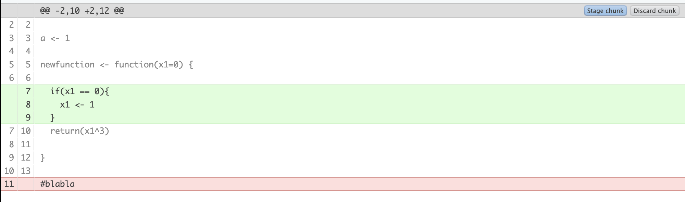

git and R
Note
This is the lab on using git and GitHub with R. It will take you through some basic steps to start using git with your R code and how to work with others on the same code. When you are comfortable there are some more exercises showing good to know functionalities of git and GitHub.
This lab assumes that you have a GitHub account, commandline git and correct git configurations. If you do not and need help, please contact a TA.
Install packages
The first thing we want to do is install the package required for the exercise.
Working with git and GitHub starting from RStudio
Let’s go through the common situation of starting a new project and connecting it to git and GitHub. Let’s create a mental model for this: Hypothetically, you have just been asked to perform some data analysis, produce some plots, and now it is time to start!
In RStudio, create a new project in a new directory. You can initialize it as a git repository upon creation or you can do that after using
usethis::use_git().Connect it to GitHub using
usethis::use_github().Create an R script in your project and write some code. You are free to do whatever you want here. Write a function, create a plot, use a public dataset. Go crazy!
Use the RStudio git pane to
commityour code including a commit message.

pushthe changes to your GitHub repository. Then go to GitHub and check that you can see your changes there. In your mental model, this is you sharing your code with your collaborators or users.Now introduce some changes to your script from GitHub and
committhem. At this point, your GitHub repository is onecommitahead of your local repository. In the mental model, this can be your collaborators making changes in their local repository andpushing it to your shared GitHub project, or a user suggesting a change, that you accept, in your publicly available R-package, used by millions. For now, lets ignore thinking about who has access tocommitto your repository, but do not worry, there are ways to safeguard this. Your code can be open on GitHub without other people being able to ruin it so you have to constantly go back to a previous unruinedcommit!To transfer the changes in the GitHub repository to your local repository, go back to RStudio and use the blue arrow in the git pane to
pullthe changes. In the mental model this is you updating your code with the code contributed by your collaborators. Notice here that if if you had in the meantime made some changes to the local repository in the same R script and position as you had on GitHub, there would be what is called a “merge conflict” when you tried topull. We will get to those later.Let’s look at the
diffoperation. Make some changes in your local repository R script again, both removing and adding something, then press thediffbutton in the git pane. This should bring up a new window that is similar to the image below. As you can see it clearly shows you what has been added and what has been removed, what thedifference is since your lastcommit.

- Go ahead and
committhe changes you made. No need topushthem to GitHub. Now lets go into our mental model and say that you did not like those changes. You have done something you regret, or broken something, and you want to go back. One of the main points of version control after all is the ability to go back. Torevertto the last commit state you can use the Revert.. button in RStudios git pane, it is in a dropdown from the cogwheel. Go ahead and test it!
If you want to go further back to an older commit you will have to use the terminal pane in RStudio. In essence, you are using git from the terminal in your local repository. Here are the commands:
git reset HEAD~n steps you back in your commit history n commits. In this case HEAD~1 means go one commit back. Look at your R script, are the changes you made still there? They should be. You have gone back one commit, not removed the changes you made during that commit. But now that we are on this commit you can git restore your R script file to take it back to the way it was at the start of current commit. Go ahead and try it out and make sure it works as you would expect it to!
Now you should have all the tools you need to work with git in a basic capacity, starting from a new project on your device. Notice that you do not need to start from a new project, you can also take a folder with lots of work you have already performed and make it an R project and initialize git in it. It will of course only track changes from that point, not what you have done previously, but it is still a good idea!
The point here being that starting from scratch or starting from a bunch of work that you have already done, or starting by creating a GitHub repository and pulling that into RStudio using File > New Project > Version Control > Git , there are tools for any situation and it is not too late to start working reproducibly, collaboratively and with backups using git!
Additional topics and exercises
Branches
Branches in git are a way to create a separate version controlled instance of your repository. Think of your git changes as a tree trunk, growing as you add and commit, but always possible to reset and go back down to a lower point on the trunk. Then branching is the equivalent of a branch shooting out at a certain point on that trunk with the possibility to grow as you develop that branch. This permits you or someone else to work on a separate idea at the same time as you continue to develop the trunk. Say for example that you have a situation where there is a stable release of your R package and you do not want to push changes to this. So you create a branch called “development” and when you are happy with it you merge that branch back into the trunk!
Useful commands for branches from terminal:
git branch <name of branch>: Create a new branch.git branch: See list of branches. Current branch marked with *.git checkout <name of branch>: Move to branch.git merge <name of branch>: Merge the branch you are currently on with the branch named in command.
However, you can work with branches from RStudio as well! To do this you can use the purpleish button in git pane that looks like two squares connected with a diamond. Once you have created a new branch you can switch branches to the right of the branch button in the git pane.
Exercise:
- Either create a new git version controlled R project in Rstudio, or continue from your last one.
- Create a new branch using RStudio. Make sure you are on that branch afterwards.
- Introduce some changes in your R script.
committhem. In our mental model, this is you developing something experimental until you are satisfied with it. - Switch back to the main branch.
- To
mergethe new branch with our main branch we will use the terminal again. In the RStudio terminal perform themerge. In the mental model this you being satisfied with the development branch and calling it a stable release, a part of the main body of code!
Congratulations, you now know how to create a branch, switch between branches, and merge the branch back into main.
Merge conflicts
Earlier we thought about the issue of changes being introduces in the same file and position in your local copy of a repository and in the GitHub version of the repository at the same time. A so called “merge conflict”. This can also happen if you are working on two branches, introduce changes in the same places, and then try to merge! But you should try not to worry too much about merge conflicts, they can be solved if you know what you are doing.
Introduce changes in the same part of your code on your main and new branch.
committhe changes.Use
git merge <name of branch>from the main branch. This should result in the merge conflict.
The output you should get from the merge is similar to:
You can also use git status from terminal to check which file is modified and why.
Once a merge conflict occurs the file affected is modified to reflect the conflicting areas. It can look something like this:
In this instance it is telling us that in branch named “test” a <- 3but on our main branch a <- 2 and b <- 2 has also been added. To pick which one you want to go with simply delete the >>,<<,== notifiers and whichever rows of code that you do not want. Once you have done this, finalize the merge by commiting the changed files.
- Fix your merge conflict and finalize the merge.
Good job! You know know how to resolve merge conflicts!
Forks and pull requests
Forking a repository on GitHub means creating a copy of the repository on your GitHub user. This can be very useful if you want to make some changes to a repository that you do not have push access to, for example. It is also a great way collaborate because it adds more backups of the repository and because of “pull requests”, which are a way of implementing your local changes to the source repository where the owner of the repository has the power to review and choose whether to accept them or not.
For example, in this RaukR course we have a repository for all the teaching materials that all teachers have forked, made changes to and then submitted a pull request back to the source repository.
To fork a repository you can either use the GitHub website of the repository you want to fork, or you can use usethis. If you are using RStudio it will also automatically create a R project for the local repository.
This command does a lot of things, from happygitwithr
- Forks the source repo on GitHub.
- Clones your fork to a new local repo (and RStudio Project). This configures your fork as the origin remote.
- Configures the source repo as the upstream remote.
- Sets the upstream tracking branch for main (or whatever the default branch is) to upstream/main.
- Opens a new RStudio instance in the new local repo (and RStudio Project).
We have not covered “upstream” and “remote” in our git vocabulary yet. Basically remotes are connections for your repository, and being upstream means being a repository closer to the source than your repository, which is downstream (as it is a fork). So the sentence “Configures the source repo as the upstream remote” translates to adding a connection specifying that the source repository is where your repository came from. This connection is used to update your fork with any future changes that occur in the source repository.
- Fork the repository https://github.com/Sebastian-D/testgit using one of the methods described. Also clone a local copy of it. Make sure you can find your fork on GitHub.
Now we are ready to make some changes to the code in our local repository. But before this we should create a new branch for the pull request. For this we can use usethis::pr_init(branch = "branchName"). This will also automatically switch to the branch.
Create a branch then make some changes to the repository. In the mental model you are implementing some feature or fixing some bug.
addandcommitthe changes with a commit message.
To submit a pull request you can use pr_push(). This should open a browser where you can submit the pull request. If the maintainer of the source repository wants to modify the pull request he can either do this himself or suggest some changes to you, whereupon you make the changes the run pr_push() again.
- Submit the
pullrequest! Go ahead and view it on GitHub.
There is a whole family of pr-* functions for both the person submitting the pull the request and the maintainer of the source repository that will review and accept/decline the pull request. I really recommend you read here if you think this is of interest!
Good job completing the exercises! git and GitHub are big topics, but knowing a little gets you a long way and then you discover the rest when you need it!
Session
Click here
R version 4.5.1 (2025-06-13)
Platform: x86_64-pc-linux-gnu
Running under: Ubuntu 24.04.2 LTS
Matrix products: default
BLAS: /usr/lib/x86_64-linux-gnu/openblas-pthread/libblas.so.3
LAPACK: /usr/lib/x86_64-linux-gnu/openblas-pthread/libopenblasp-r0.3.26.so; LAPACK version 3.12.0
locale:
[1] LC_CTYPE=C.UTF-8 LC_NUMERIC=C LC_TIME=C.UTF-8
[4] LC_COLLATE=C.UTF-8 LC_MONETARY=C.UTF-8 LC_MESSAGES=C.UTF-8
[7] LC_PAPER=C.UTF-8 LC_NAME=C LC_ADDRESS=C
[10] LC_TELEPHONE=C LC_MEASUREMENT=C.UTF-8 LC_IDENTIFICATION=C
time zone: UTC
tzcode source: system (glibc)
attached base packages:
[1] stats graphics grDevices datasets utils methods base
other attached packages:
[1] gitcreds_0.1.2 usethis_3.1.0
loaded via a namespace (and not attached):
[1] digest_0.6.37 fastmap_1.2.0 xfun_0.52 magrittr_2.0.3
[5] glue_1.8.0 knitr_1.50 htmltools_0.5.8.1 rmarkdown_2.29
[9] lifecycle_1.0.4 cli_3.6.5 vctrs_0.6.5 renv_1.0.9
[13] compiler_4.5.1 purrr_1.0.4 tools_4.5.1 evaluate_1.0.3
[17] yaml_2.3.10 rlang_1.1.6 jsonlite_2.0.0 fs_1.6.6